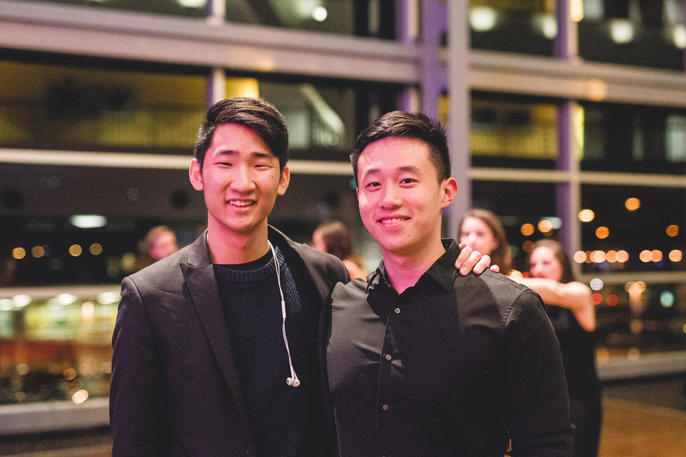
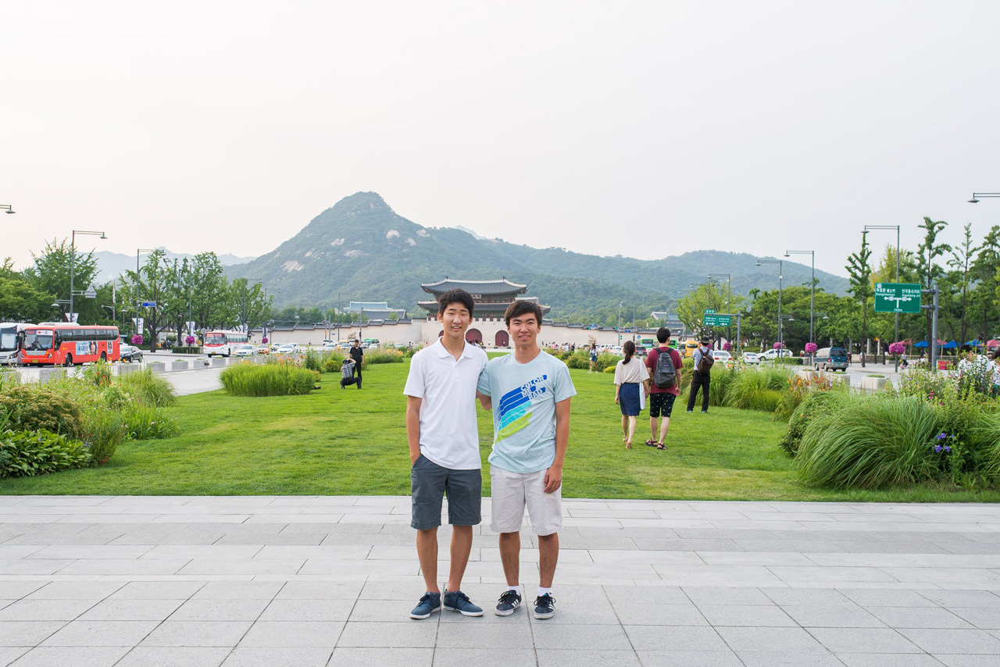
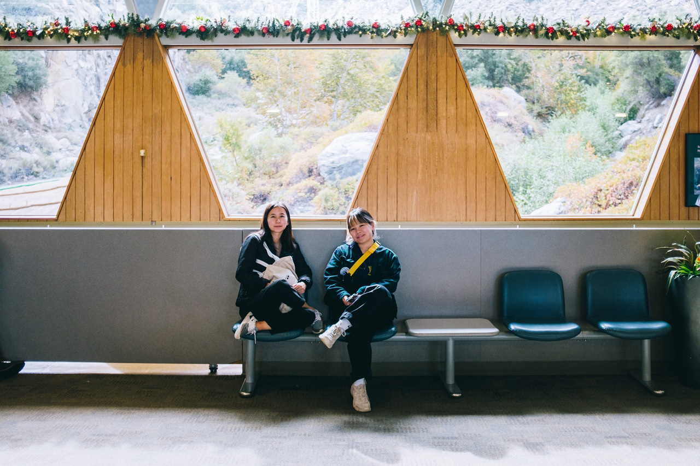
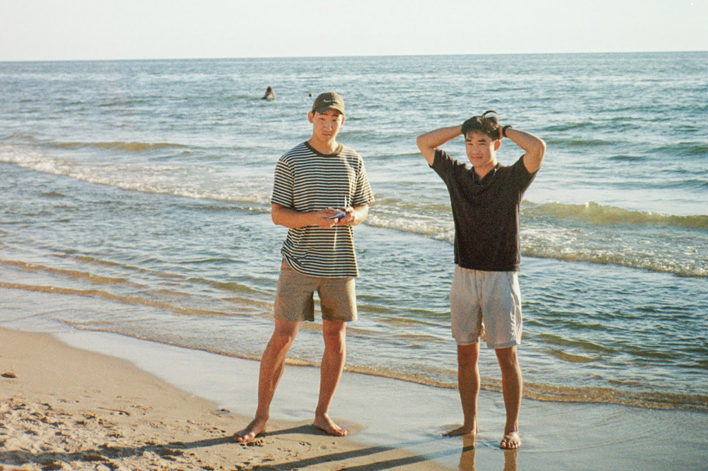
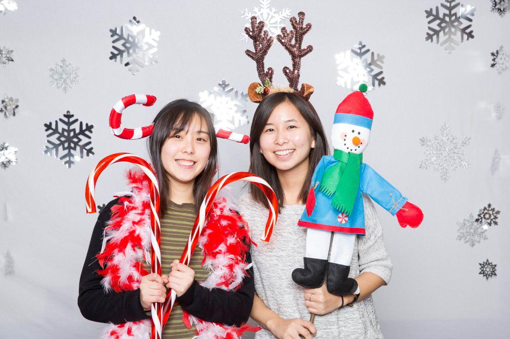
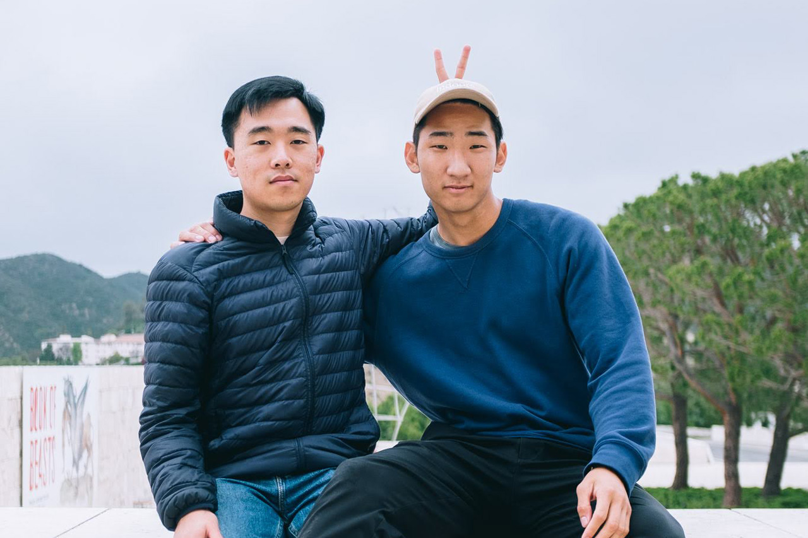
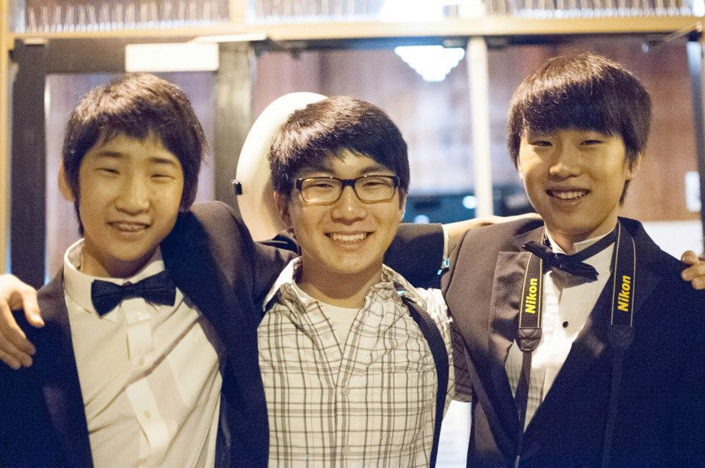

Esther Jeon
Bride
Soonho Kwon
Groom
Joanna Xue
Matron of Honor
Back when they first crossed paths, Esther was this endearing, sleepy, and determined freshman, while Joanna was the lively, expressive, and somewhat clueless junior.

Joanna Xue
In the beginning, Joanna and Esther's friendship was a delightful mix of fitting perfectly and being wonderfully unexpected. Back when they first crossed paths, Esther was this endearing, sleepy, and determined freshman, while Joanna was the lively, expressive, and somewhat clueless junior. As they met up time and time again, exploring various on-campus eateries (I mean, they practically conquered every spot from Honeygrow to Greenstreet Coffee to Walnut St. Cafe, and then some!), their bond deepened into something truly special. It was the kind of friendship that made them feel safe, understood, and open with one another. In those moments, Joanna found a confidante who allowed her to express herself freely, even when she was still figuring herself out. And Esther found someone who could gently share truths she needed to hear. Their friendship continued to blossom as they visited each other in San Francisco and New York, stayed connected through those trying COVID-19 times while working on their secret project at off-to.xyz (#stealthmode), played Super Smash Bros and got KO-ed by Soonho, and witnessed each other's love lives evolve. Joanna tied the knot, and Esther, during the ups and downs of long-distance love, became more convinced that Soonho was her forever person. Joanna couldn't be happier for Esther and her incredible connection with Soonho. He's not just someone who adores her for all that she is, even on the toughest, sleepless nights, but he also shares her passions—whether it's a mutual love for Zelda, scaling rocks, getting lost in anime and kdramas, obsessing over design, or crafting up a storm with DIY projects. He's a genuine force for good, extending his kindness to family, friends, coworkers, and everyone in their orbit. Joanna (and Austin, too!) are beyond thrilled to stand by Esther and Soonho as they embark on this exciting new chapter together. They're ready to support them every step of the way.
Brian Tao
Best man
Soonho had toiled over whether he should pursue this connection, and when he asked Brian about it, Brian said, “yeah bro u should go for it”. And just like that, Soonho found his true partner in life.

Brian Tao
Soonho and Brian met under the bright lights of CMU’s design studio in 2016. Brian said hi to him briefly and thought “gee, that guy seems kinda quiet and intimidating”. Brian had wanted to become a photographer on campus, and Soonho was the preeminent photographer on campus; Susie, a mutual friend, made the introduction. Little did Brian know that when he was later asked to photograph the school's dance performance, he’d do it alongside Soonho. From there, the two became fast friends as well as the de facto campus photographers. Soonho taught Brian the in’s and out’s of capturing the beautiful memories that comprise a sorority formal, and Brian taught Soonho that he could, in fact, survive living 3 months in a shared San Francisco studio, splitting 100 square feet with his now best friend plus their airbnb host. It was in that living room that Soonho and Brian shared great memories, watching movies projected on the wall (in silence at 9pm when their host went to bed), and coordinating their daily schedules (so they could get home at the same time due to their single shared key). It was also in that living room that Brian first heard Soonho talk about this girl, Esther, that he had met while visiting UPenn. Soonho had toiled over whether he should pursue this connection, and when he asked Brian about it, Brian said, “yeah bro u should go for it”. And just like that, Soonho found his true partner in life. Since then, Soonho and Brian have been far in distance, but close in heart. They’ve been on countless trips together, sharing hobbies like climbing, snowboarding, and spending too much money buying material objects. Brian is thrilled to have been a part of Soonho’s life, to have gotten to share so many core memories with both him and Esther, and to now celebrate their union and the rest of their lives. He is so happy to have found a friend like Soonho, and can’t wait to see what the rest of this journey together will bring.
Susanna Cha
Bridesmaid
It all started with a post on Facebook’s “Penn Roommate Connect Class of 2019 (Females)” group.
Susanna Cha
It all started with a post on Facebook’s “Penn Roommate Connect Class of 2019 (Females)” group. An Esther Jeon from Dallas was looking for a roommate and it was love at first post! Esther and Susanna exchanged some cringey messages (lol at our freshman selves est) and ended up rooming together all of freshman year and have been close ever since. Though they are in a LDF (long distance friendship), they continue to pray for one another and stay connected. Susanna is amazed at how Esther has grown through her relationship with Soonho and is so excited for how they will continue to grow in their next stage as a married couple!
Jiwan Kang
Groomsman
Over all of these years, it has been crazy for Jiwan to watch Soonho’s growth in his height, forearms, and maturity (they are all yuge).

Jiwan Kang
In 2011, two Freshman boys named Soonho and Jiwan met during soccer tryouts and quickly bonded over their obsession with FIFA Ultimate Team. They would continue to spend much time together during their extensive time sitting on the bench. Beyond the soccer field, they volunteered together, played ultimate frisbee, and made a suit out of Ike’s sandwich bags (it was an excuse to eat more Ike’s sandwiches). When college came around, Jiwan stayed on the west coast while Soonho left for the east coast. At the time, it was sad that they were far apart. But now, it’s fairly obvious that going to CMU was a very good decision 🙂. In the summers of college, they moved on to climbing because it’s impossible to be a benchwarmer in a solo sport. After graduating, they returned to San Jose and often climbed together at Planet Granite. During COVID, they transitioned from climbing rocks to mining rocks in Minecraft. Together, with Frank and Junseo, they defeated the Ender Dragon numerous times, while dying far more times in the process. Fast forward to today, Soonho and Jiwan are next-door office neighbors and they regularly catch up nearby. Over all of these years, it has been crazy for Jiwan to watch Soonho’s growth in his height, forearms, and maturity (they are all yuge). Jiwan admires Soonho’s efforts that he puts into those around him, as well as the support that he and Esther give each other. Jiwan is so excited to continue to watch their journey and growth together in the many many years to come.
Hilary Lai
Bridesmaid
Hilary’s good friend Soonho asked her senior year if she would keep his visiting girlfriend company (read: babysit) over the weekend while he was serving as 1 of 2 go-to event photographers at Carnegie Mellon, and Hilary thought, sure why not?

Hilary Lai
Hilary’s good friend Soonho asked her senior year if she would keep his visiting girlfriend company (read: babysit) over the weekend while he was serving as 1 of 2 go-to event photographers at Carnegie Mellon, and Hilary thought, sure why not? That fateful weekend ended up becoming the beginning of a treasured friendship between Esther and Hilary, taking them to a new grad life in NYC, and now a long distance friendship that is filled with roadtrips to scale rocks and appreciate God’s creation, text messages about good pants, and a consistent presence to support each other in the mundanity of their day-to-day lives. One of the many things Hilary appreciates about Esther is her capacity for beauty and wonder and how she will share that with the people around her. It brings her joy that Esther has a partner in Soonho to appreciate the world with, and that these two people she cherishes dearly have found each other. Though Soonho may have been very thankful that weekend senior year, Hilary is eternally grateful to have found a friend in Esther, and is thankful to have been a part of their journey thus far (and for all to come!)
Eric Wong
Groomsman
However, in the Fall of 2015, their friendship would be put to the ultimate test in a union as trying as marriage itself: becoming college roommates.

Eric Wong
Eric and Soonho have known each other for around ten years now, but it’s honestly difficult to pinpoint where it started. It might have been mid-backflip at at a local favorite trampoline park, or in the late hours of the evening while photographing for their high school’s yearbook. Either way, from early in their lives, it was clear that they would become great friends through their countless shared hobbies, likeminded creativity, and mutual love of Gravity by John Mayer. However, in the Fall of 2015, their friendship would be put to the ultimate test in a union as trying as marriage itself: becoming college roommates. How could Eric, a very light sleeper; and Soonho, a very loud awaker ever come to coexist? Well luckily for them, the answer was in fact very well, as they would continue to bond over everything from design classes to pick up volleyball games, smoothies, and much more in some of the most formative years of their lives. While they are roommates no longer, Eric and Soonho have continued to discover new pursuits together and have shared in some of the many glints and experiences that life has to offer. Eric is always grateful to be able to call Soonho a friend, and so happy to see the lanky, bowtie-wearing kid (that’s Soonho) he once knew grow up, and find a woman like Esther to marry and share his life with!
Grace Cho
Bridesmaid
From sharing secrets on the (no-longer-existent) Hill patio to sharing Spotify playlists on the way to Storm King Art Center, they’ve been connected since day 1 with a bond that can only be attributed to Jesus!!

Grace Cho
Two youngsters, lost and confused, meet in their first year of college… And a few career changes, many emails, even more texts, and some monumental moves later, Esther and Grace find themselves in a sisterhood that can’t be replaced! From sharing secrets on the (no-longer-existent) Hill patio to sharing Spotify playlists on the way to Storm King Art Center, they’ve been connected since day 1 with a bond that can only be attributed to Jesus!! Grace still remembers the first time the name “Soonho” was brought up in a conversation, while she and Esther were sitting criss-cross on a bench outside the dorms. The instant that Esther shared about Soonho’s gentleness and straightforwardness, Grace's look of doubt was relieved to peace. She can’t recall what kind of supportive look she made next, but it probably said: “This could be! THE guy!” And five years later, Grace is so honored and grateful to have been with Esther and Soonho from start to marriage. Seeing how the two draw people in with their comfort and kindness, she eagerly awaits for the many more adventures to come!
Frank Lee
Groomsman
As fate would have it, Soonho was the last chair cellist for the El Camino Youth Orchestra, and Frank was the only bassist, meaning they were always adjacent to each other.

Frank Lee
Frank and Soonho met in 2010 as two scrawny boys in their eighth grade, one standing at about 5’3 and the other at approximately 5’5. They didn't exchange many words in their first year of friendship, but they shared a common interest: soccer. Although Frank’s interest in soccer was cut short because his tendon was literally cut, the two’s lifelong friendship was only a beginning. Their common passion continued in high school through music. As fate would have it, Soonho was the last chair cellist for the El Camino Youth Orchestra, and Frank was the only bassist, meaning they were always adjacent to each other. Towards the end of their high school lives, Soonho and Frank – alongside Junseo and Jiwan – formed OBTU, whose friendship is stronger than any. From then, they were inseparable, both in and out of the classroom. While their hangouts became less frequent during their college years, every reunion felt like no time had passed at all. They witnessed their sisters transform from infants into teenagers, while they themselves evolved from teenagers into adults. The post-grad school years, marked by the onset of COVID, saw their friendship grow exponentially. Living just a few houses apart, they established a weekly tradition of beer sessions (#TFT), during which they discussed their shared life experiences and challenges. Over the course of the 13 years he's known Soonho, Frank has observed his friend's literal and metaphorical growth, witnessing him evolve from a soccer-loving music enthusiast into a man with a myriad of passions who lives life to the fullest. Frank is thrilled that Soonho found Esther, someone who brings him as much joy as Frank feels being Soonho’s friend.
Somina Lee
Bridesmaid
Their shared experiences have been quite eclectic to say the least – meeting Japanese Breakfast after a random festival in NYC, driving to Sonic in Dallas to try exploding boba (& being utterly disappointed…), wearing plastic bags at a Busan baseball game to fit in with the locals.
Somina Lee
Somina and Esther met freshman year at their college church, and their relationship quickly grew from acquaintances to roommates to lifelong friends, and now bridesmaids! Their shared experiences have been quite eclectic to say the least – meeting Japanese Breakfast after a random festival in NYC, driving to Sonic in Dallas to try exploding boba (& being utterly disappointed…), wearing plastic bags at a Busan baseball game to fit in with the locals – but Somina believes this was only possible because of Esther’s loving heart and willingness to do anything for a friend. Somina is thrilled Esther has found an amazing life partner in Soonho, a friend who Somina actually met at a middle school retreat (small world!) and a brother-in-Christ who cherishes Esther very dearly. She is so excited for the newlywed couple’s next journey (and for all their cool, aesthetic photos)!
Junseo Park
Groomsman
They shared the same teacher, but in different periods; despite this, the teacher would often call them by each other's names, or some permutation of the two (Junseo often went by "Soonjo").
Junseo Park
Junseo and Soonho met through middle school PE, but not in the way you might expect. They shared the same teacher, but in different periods; despite this, the teacher would often call them by each other's names, or some permutation of the two (Junseo often went by "Soonjo"). Once they actually met each other, they discovered similarities beyond just their names that helped blossom their friendship - a shared love for classical music, ultimate frisbee, Minecraft, and struggles through chemistry classes. Even while attending college on opposite coasts, Soonho was a strong pillar for Junseo through regular phone calls that provided exciting stories and words of encouragement. Since college, Junseo has been very proud to see Soonho continue to grow over the years - challenging himself to move to the city, find new communities, and step out of his comfort zone mentally, emotionally, and spiritually. Junseo is very excited for Soonho and Esther's next chapter, and is thrilled to see what the future holds for them as they take on life together.
Julie Joo
Bridesmaid
When they were younger, Julie often visited Esther in Dallas during summer break, and they would huddle by the computer to play Jackfrost and Flash Flash Revolution (both epic computer games), watch live Big Bang performances on Youtube, and download lots and lots of music (via Limewire-–sorry FBI) on to their 3rd generation iPod Nanos (back when Apple products were superior).
Julie Joo
Esther and Julie might be cousins on paper, but they are basically sisters in real life. They have witnessed each other's growth throughout the years and share many special memories filled with both joy and grief. When they were younger, Julie often visited Esther in Dallas during summer break, and they would huddle by the computer to play Jackfrost and Flash Flash Revolution (both epic computer games), watch live Big Bang performances on Youtube, and download lots and lots of music (via Limewire-–sorry FBI) on to their 3rd generation iPod Nanos (back when Apple products were superior). Together, Esther and Julie experienced significant milestones like applying to and getting accepted into college, forming new friendships/relationships throughout the years and starting their jobs as product designers. While some aspects of adulthood might not be as vibrant or blissful as they once were when Esther and Julie were children, their shared history is a constant reminder to Julie that, in times of joy or adversity, they can always rely on each other for support and to celebrate every new chapter that life unfolds. Esther, as a cousin, friend, and sister, has greatly influenced who Julie is today. Julie is so happy for both Esther and Soonho as they enter this new chapter together and wishes them a beautiful marriage filled with joy, growth, and never-ending support for each other.
Michael Chung
Groomsman
In the late summer of 2011, Michael arrived at the annual El Camino Youth Symphony season kick-off camp with a mission: to adopt a new little boy named Soonho. Let the record show that when they first met, Michael was the taller one.

Michael Chung
In the late summer of 2011, Michael arrived at the annual El Camino Youth Symphony season kick-off camp with a mission: to adopt a new little boy named Soonho. A mutual friend had just left the orchestra, and told Michael to “take care of Soonho when he arrives.” Let the record show that when they first met, Michael was the taller one. With a swiftness that still baffles, the boys became joined at the hip, and they bonded deeply over that first week through delirious sleeplessness and a nearly-devastating encounter with a handrail. Their relationship grew steadily over the next two years, and truly blossomed during the summer of 2013 when, inspired by the movie musical Les Misérables, Michael and Soonho dedicated their entire orchestra tour to walking precariously on bridges, seeking out rainy alleyways to re-enact Samantha Barks’ iconic rendition of On My Own, and forever butchering their own experience of the most tender moments of the story through yet more delirious sleeplessness (#COMFORTME). Though their frequency of interactions decreased once college came along and Soonho moved to the east coast (and then they swapped coasts), every moment spent together has continued to be life-giving and faith-grounding. Michael credits Soonho as responsible for his social, emotional, and spiritual development through their deeply formative high school years, and truly cannot be happier that his dear friend has found his lifelong partner in Esther. Soonho, I’m so excited for you and Esther to experience married life together, and I can’t wait to hear about how she changes you for the better.